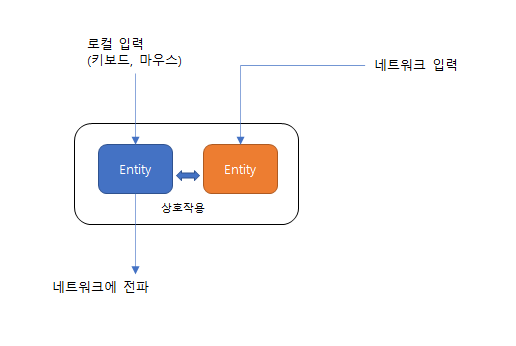

롤백을 이용한 엔티티 동기화
GDC 오버워치 넷코드 강연을 보았다는 가정으로 작성되는 글이다. 테스트를 위한 소스코드는 깃헙 에 공유해놓는다
시스템 구성
엔티티 자체는 이번 데모에서는 단순 구성되어 있다. 왜냐하면 엔티티의 복잡한 동작을 구현하는 것이 아니라 엔티티의 입력부분만 일치시켜주면 그 뒤는 동일하다는 가정을 앞서 했기 때문에, 입력을 맞추어주는데 집중하였다
사실 엔티티 동기화 시스템은 인풋싱크를 위해 존재한다고 말 할 수 있다

파란색은 컨트롤 엔티티(플레이어) 이고, 주황색은 논컨트롤 엔티티(다른 플레이어) 이다. 중요한것은 이 둘이 서로 상호작용을 하고 있지만 네트워크로 입력이 완전히 동기화 되지 않는다는 것이다.
여기서 두가지 전략을 쓸 수 있는데, 하나는 락스텝이고, 다른 하나가 이번에 설명할 롤백을 통한 동기화이다.
락스텝은 스타크래프트 같은 전략게임에서 자주 채용하는데, 프레임마다 모든 플레이어의 입력이 동기화될때까지 프레임 업데이트를 멈추는 방식이다. 네트워크 안좋은 사람이 게임에 참여하면 프레임 드랍이 발생하는 이유가 이것때문이다.
액션성 높은 게임에서는 이런 방식이 매우 안좋기 때문에, 프레임 강제 동기화를 사용하지 않는다.
시스템 설명
시스템 이해를 위해서 일부 모듈을 설명한다.
프레임 동기화 모든 시스템은 프레임카운트를 동일하게 가져야 한다. 즉 누군가는 1초에 5프레임인데, 누군가는 1초에 10프레임을 진행시켜서는 안된다. 이 프레임카운트는 서버에서도 동일하게 가져간다. 이 프레임카운트가 롤백을 판단하는 기초가 되기 때문이다. 로직프레임과 렌더프레임을 분리하는 방식을 취하는게 유리한 이유이다
입력발생 입력은 매 프레임마다 발생한다. 여기서 매프레임발생해야 한다는 의미는 "아무것도 안한다" 도 입력으로 취급한다는 것이다. 그래야 상대방이 네트워크 오류인지 정말 아이들 상태인지 구분할수있기 때문이다. 매프레임 입력이 발생하면 네트워크를 통해서 다른 플레이어들에게 전파시킨다.
[팁] idle, move 같은 지속적인 입력은 이후에 설명할 예측시스템 사용하여 최적화가 가능할 것으로 생각된다.
안전 프레임 내 로컬의 모든 엔티티의 입력 프레임들중 최소값과 동일하다. 이값이 가지는 의미는 이보다 이전으로는 롤백이 발생하지 않는다는 것이다. 따라서 상태저장을 위한 배리어값으로 사용된다.
엔티티 저장 롤백을 하려면 시스템이 완전히 해당 프레임으로 돌아가야 한다. 이를 위해서 월드 전체의 상태를 프레임별로 저장해야 한다. (어떤 프레임으로 롤백할 수 있을지 몰라서).
[팁]만약에 네트워크 상태가 너무 안좋다면 동적으로 프레임딜레이를 늘려서 전체 프레임수가 일정이상 되지 않도록 할 수 있겠다.
입력 예측 리모트 엔티티의 입력이 아직 도착하지 않는 경우에도 , 프레임업데이트를 위해서 입력이 필요하다. 이 때 예측입력을 가상으로 만든다. 어떻게 보면 이 시스템의 핵심아이디어 라고 할 수 있겠다. 예측은 사실 복잡한 방법을 사용하지 않고 마지막 입력을 복제하게 된다. (오버워치에서도 동일). 물론 정밀하게 예측할 수 있으면 좋지만 사실 이방법만으로도 충분하다는 것이 이미 개발한 사람들의 의견.
[팁] 최적화 얘기를 마저하면, 아이들 입력이 도착하고 나서 계속 아이들상태로 예측이 되기때문에 굳이 다른 클라이언트에는 상태변화가 없다면 패킷을 보낼필요가 없다. 네트워크 밴드위스를 확보하는 쉬운 방법이라고 생각된다.
예측 실패 실제로 리모트입력이 도착하면 예측이 맞았는지 틀렸는지 알수 있다. [O] 예측이 맞았다면 => 안전프레임을 새로운 입력프레임까지 증가시킨다 [X] 예측이 틀렸다면 => 롤백을 진행한다
프레임 롤백 롤백이 발생하면
- 해당 프레임 시작상태를 로딩해야한다.
- 엔티티의 명령을 전달한다
- 현재 프레임까지 시뮬레이션한다
이때 시뮬레이션에 의해서 네트워크로 전파되는 내용이 바뀌면 안된다. 즉 내가 한 행동을 덮어쓸수는 없다. 경우에 따라서 의미없는 행동이 될 수도 있다. ex) 행동불능에 빠진상태에서 이동명령을 내렸다. 하지만 이것이 의미없는 것은 모든 리모트 시스템에서 동일하게 판정할 수 있으므로 굳이 번복하지 않아도 된다.
롤백 시스템의 주의점
월드 시뮬레이션이 결정론적이어야 한다. 사실 이것을 위해 로직에는 랜덤이 있으면 안된다! 하지만 이 기조를 유지하기는 매우 어려운데 예를 들어 "30% 확률로 크리티컬" 이라는 로직이 항상 같은 결과를 낼 수 있을까? 수도 랜덤을 구현해서 해결해야겠지만 쉽지는 않을 것이다. 하지만 해내야 한다...
한번 전파된 입력은 번복되지 않는다 이것을 번복하려면 롤백이 아니라 프레임카운트 자체가 뒤로 돌아야하는데, 롤백이 된다고 월드 프레임카운트가 줄지 않는다. 따라서 입력은 번복될 수 없다. 유일한 예외가 있다면 서버프레임카운트 자체가 진행되지 않아서 그 이후의 입력이 다 무효화되는 경우인데... 이런것은 예외 오브 예외.
프레임저장에 주의하자 60프레임까지 롤백이 가능하다고 하면, 월드정보x60 만큼의 메모리용량이 필요하다 (디스크를 쓰기에는 프레임업데이트가 너무 빠르다. 메모리밖에 답이 없음..) 하지만 월드 시스템이 너무 커지면 이게 부담스럽다. 따라서 데이터베이스 백업하듯이 부분 저장이나 변경점만 저장하는 방식을 쓸수도 있는데, 이것까지는 투머치 해서 생각만하고 말았다.
서버는 롤백하지 않는다 서버는 앞서 설명한 안전프레임까지만 시뮬레이션하게 된다. 이렇게 하면 롤백을 하지 않아도 된다. 다만 이것과는 별개로 지금 현재 프레임카운트를 알아야 하는데 그래야 새로 동기화하는 플레이어에게 프레임동기화를 할 수 있게된다. 새로 동기화할때 엔티티의 상태와는 별도로 리졸브되지 않은 명령들도 전달해야한다. 그러면 새롭게 동기화하는 플레이어는 부족한 부분을 예측을 통해서 현재프레임만크 따라잡아서 진행하는 식으로 맞추게 된다.
- PS
시뮬레이션 테스트 동영상 을 첨부한다. 흰색은 정상+예측을 사용한 프레임, 빨간색은 롤백된 프레임을 난타낸다. 예측을 했다가 롤백되는 경우를 확인할 수 있다.
)}